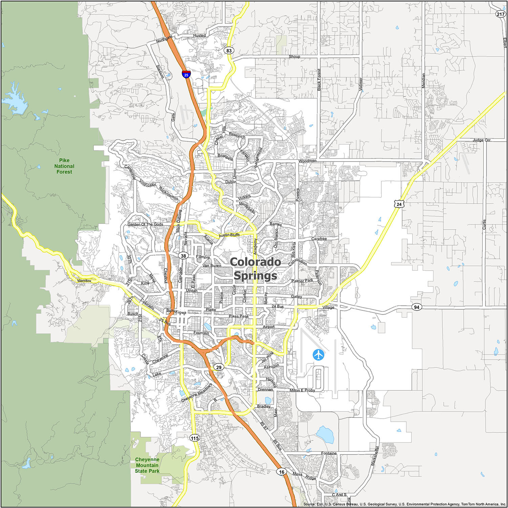

Hey! I'm chase!
I am a student software engineer living in Colorado Springs Colorado.
I love many things, but some of my favourite things are:
- The Bible
- My girlfriend
- Board games
Please look around my website and I would love to hear from you!
I am a student software engineer living in Colorado Springs Colorado.
I love many things, but some of my favourite things are:
Please look around my website and I would love to hear from you!
I have been trying to enter the software industry for a long time now. I started learning to code when I was 16, starting with python. I slowly moved to C# when my brother and I tried making our own video game. The next couple of years I tired over and over again to make a video game, always getting pretty far, but, sadly, I was never able to fully finsih one.
When I went to college I went right into computer science, and I loved it, but after a year I realized I wanted to get into the industry faster, so I joined Thinkful, and I am so excited!
I would love to code anyone's website, I think it is so fun! I am so ready to get into a job helping people reach others through awesome websites!
I would love to help people out!
